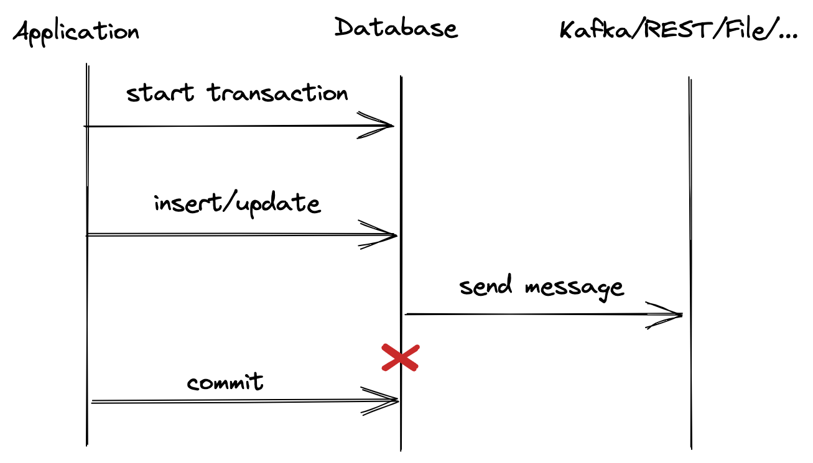
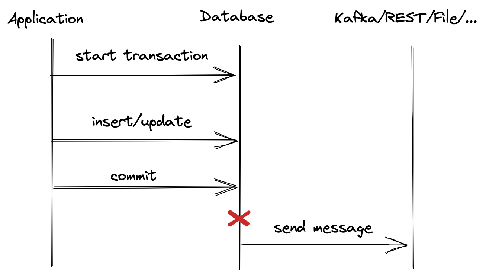
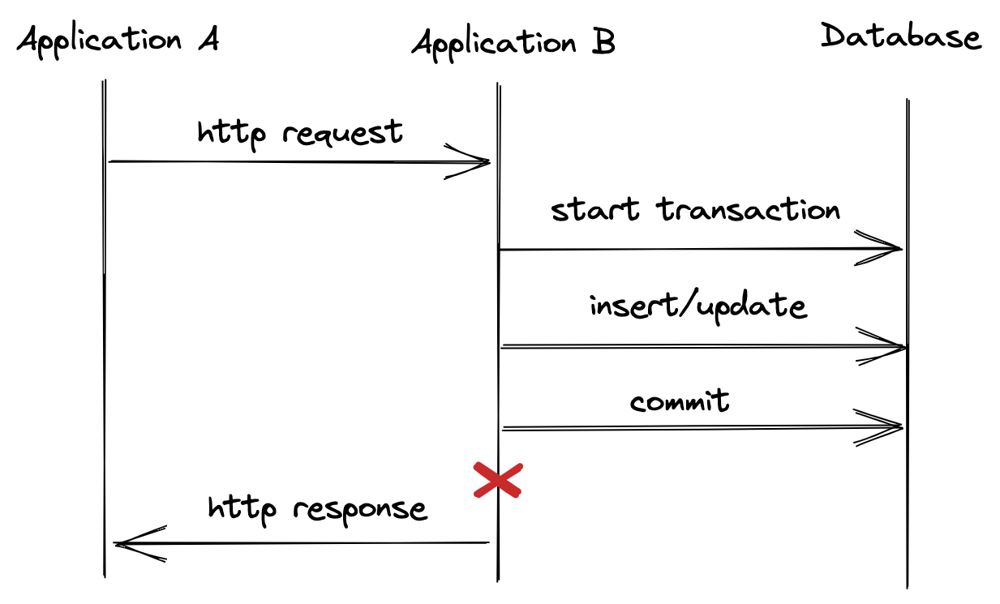

12 факторов 11 лет спустя
The Twelve Factors
- Кодовая база
- Зависимости
- Конфигурация
- Сторонние службы
- Сборка, релиз, выполнение
- Процессы
- Привязка портов
- Параллелизм
- Утилизируемость
- Паритет разработки/работы приложения
- Журналирование
- Задачи администрирования
История

Кодовая база
Одна кодовая база, отслеживаемая в системе контроля версий
Монорепозитории
- Проще делать крупномасштабный рефакторинг кода. Все в одном месте, сразу видно, что может сломаться.
- Более гибкое владение кодом. Любой может сделать Pull Request в твой код. Все видят код друг друга
- Проще обеспечить совместимость систем, которые всегда релизятся вместе
- Легче управлять общими зависимостями. Не нужен пакетный менеджер
Зависимости
Явно объявляйте и изолируйте зависимости. Приложение двенадцати факторов никогда не зависит от неявно существующих, доступных всей системе пакетов.
Хорошие практики сборки систем
Все зависимости приложения должны быть явно определены в скрипте сборки
Добавьте в ваш репозиторий скрипт для скачивания нужной версии используемой системы сборки
Храните зависимости в приватном репозитории артефактов
Запускайте сборку в docker контейнере
- Инструкция по сборке должна находиться в readme файле проекта
Конфигурация
Сохраняйте конфигурацию приложения в переменных окружения
External configuration store
Внешнее хранилище настроек позволяет:
- Менять настройки без перезапуска
- Совместно использовать настройки несколькими сервисами
- Упростить администрирование настроек множества приложений
- Логировать доступ к настройкам
- Централизовано хранить и управлять секретами
Сторонние службы
Считайте сторонние службы подключаемыми ресурсами. Не делайте различий между локальными и сторонними сервисами.

- Сервисы сегодня запущенные на одном сервере завтра могут быть запущены на разных
- Любой вызов внешнего сервиса может закончиться неудачей
- Внешний сервис может стать недоступным на неопределенное время
- При запросе любых сервисов должен устанавливаться таймаут на ответ
Сборка, релиз, выполнение
Разделяйте стадии сборки и выполнения. Одна сборка разворачивается на любые контура с возможностью отката к старому релизу

Процессы
Приложения не должны сохранять свое внутреннее состояние
- Возможность горизонтального маштабирования
- Перезапуск не приводит к потери информации

Привязка портов
Приложение двенадцати факторов является полностью самодостаточным, HTTP сервер встроен в приложение.

Минусы серверов приложений
- Требуют установки, что замедляет онбординг разработчика
- Из коробки не работают. Необходимы уникальные знания для поддержки и настройки конкретного сервера
- Поддерживают ограниченный набор технологий. Вы не запустите C# на WebLogic или Tomcat
- Конфигурация расползается между приложением и контейнером
Параллелизм
Приложение должно маштабироваться горизонтально по необходимости.

Плюсы горизонтального маштабирования
- Ресурсы можно добавлять бесконечно
- Нет остановки сервера при добавлении ресурсов
- Надежнее за счет одновременного запуска приложения на разных машинах
- Случайный запуск двух экземпляров приложения не вызывает проблем
Утилизируемость
Максимизируйте надёжность с помощью быстрого запуска и корректного завершения работы. Приложения могут быть запущены и остановлены в любой момент.
При завершении работы закройте все соединения и освободите ресурсы
Убедитесь, что приложение корректно обрабатывает сигнал SIGTERM
- Приложение должно быть готово к экстренному завершению в любой момент
Проблема двойной записи


Решение
- Outbox Pattern
- Change Data Capture

Решение:
- Идемпотентность API
Паритет окружений разработки и продуктива
Минимизируйте разрыв между разработкой и работой приложения
- Различие во времени: разработчик может работать с кодом, который попадет в рабочую версию приложения только через дни, недели или даже месяцы.
- Различие персонала: разработчики пишут код, OPS инженеры разворачивают его.
- Различие инструментов: разработчики могут использовать стек технологий, такой как Nginx, SQLite, и OS X, в то время как при рабочем развертывании используются Apache, MySQL и Linux.
Различие во времени: Trunk Based Development

Различие персонала: DevOps -> Team Topologies
- Stream-aligned team — команда нацелена на создание и доставку ценности пользователем как можно быстрее. Должна стремиться к максимальной автономности. Цель других типов команд в том, чтобы сократить нагрузку ну stream-aligned teams.
- Enabling team — технические консультанты, помогают stream-aligned teams в повышении их возможностей. Разрабатывают библиотеки, рекламируют новые подходы.
- Complicated-subsystem team — отвечают за особую часть системы, которая требует специальных знаний. Например, сопровождение особо сложной математической модели внутри приложения.
Platform team — предоставляют внутренний сервис для снижения когнитивной нагрузки, которая ложится на stream-aligned команды во время работы над их сервисами.
Различие инструментов: Testcontainers
Поднимайте локально в docker необходимые сервисы. Используйте библиотеки типа Testcontainers для интеграционного тестирования
@Testcontainers
public class RedisBackedCacheIntTest {
@Container
public GenericContainer redis = new GenericContainer(
DockerImageName.parse("redis:5.0.3-alpine")).withExposedPorts(6379);
@Test
void redisIntegrationTest() {
// ...
}
}
Журналирование
Рассматривайте логи как поток событий. Приложение только должно выводить логи в stdout, за сбор и хранение отвечает среда выполнения.

Используйте структурное логирование
До:
2021-07-29 14:54:55.1623|INFO|New report created by user 4253
После:
{
"TimeStamp": "2021-07-29 14:52:55.1623",
"Level": "Info",
"Message": "New report created",
"UserId": 4253,
"ReportId": 4567,
"TraceId": "a58fef40-90a3-4c40-a918-e1506e10bc3e"
}
- Позволяет искать логи по конкретным полям
- Нет уникальных паттернов разбора логов для каждого источника
- Добавление сквозного идентификатора процесса позволит связать логи с нескольких систем
Задачи администрирования
Код и скрипты для администрирования должны поставляться вместе с приложением, чтобы избежать проблем с синхронизацией
Скрипты миграции схемы БД должны храниться в репозитории приложения
Все разовые скрипты должны запускаться из контекста приложения
Заключение
Следование 12 факторам позволяет добиться:
- Минимизации времени подключения нового разработчика к проекту
- Максимальной переносимость приложения между средами выполнения
- Возможности горизонтального маштабирования
- Использования непрерывного развертывания
- Готовности к разворачиванию в облаке